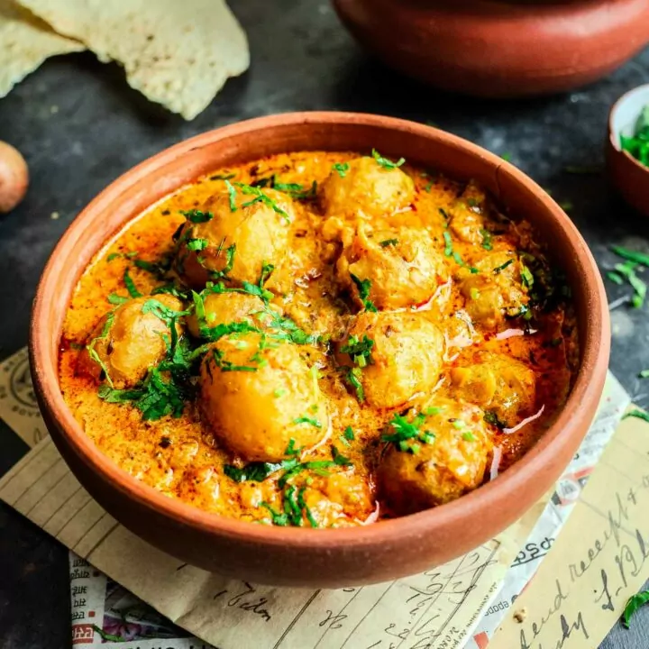

Welcome to Gill's Restaurant
This Indian restaurant feels just like home, serving delicious, traditional food made with love—just like a mother would. Every dish is rich in authentic flavors, cooked with care, and served in a clean, welcoming space. Its a place where great taste, warmth, and hygiene come together for a perfect meal.
Click here to see The Receipe of our dish

Dum Aloo is a flavorful Indian curry made with fried baby potatoes simmered in a spiced yogurt-based gravy. It includes onions, tomatoes, Slow-cooked for rich flavors, it's garnished with coriander and served with naan, roti, or rice
A thali in an Indian restaurant is a wholesome meal served on a platter, featuring a variety of dishes like dal, sabzi, rice, roti, pickle, curd, and dessert. It offers a balanced mix of flavors—spicy, tangy, sweet—and represents regional Indian cuisine, providing a fulfilling and diverse dining experience.
Leave a Review